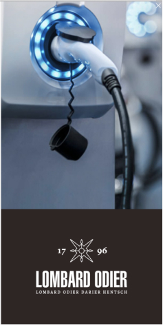
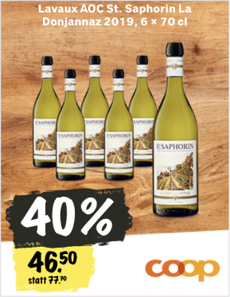

Werbung
Werbung
Werbung
Kolumnen
Kolumne von Michael Hermann
193
216
193
216
17.11.20
Kolumne von Markus Somm
193
216
193
216
17.11.20
Kolumne von Laura de Weck
193
216
193
216
17.11.20
Minimal Starter
Grid · Aufbau
Grid · Anwendung

xy-Grid · Anwendung
Like · Komponente
Teaser · Komponente
Heading 1
Heading 2
Heading 3
Paragraph
Adolf Loos
Quelle: Wikisource
Der menschliche embryo macht im mutterleibe alle entwicklungsphasen des tierreiches durch. Wenn der mensch geboren wird, sind seine sinneseindrücke gleich denen eines neugeborenen hundes. Seine kindheit durchläuft alle wandlungen, die der geschichte der menschheit entsprechen. Mit zwei jahren sieht er wie ein papua, mit vier jahren wie ein germane, mit sechs jahren wie Sokrates, mit acht jahren wie Voltaire. Wenn er acht jahre alt ist, kommt ihm das violett zum bewußtsein, die farbe, die das achtzehnte jahrhundert entdeckt hat, denn vorher waren das veilchen blau und die purpurschnecke rot. Der physiker zeigt heute auf farben im sonnenspektrum, die bereits einen namen haben, deren erkenntnis aber dem kommenden menschen vorbehalten ist.
Das kind ist amoralisch. Der papua ist es für uns auch. Der papua schlachtet seine feinde ab und verzehrt sie. Er ist kein verbrecher. Wenn aber der moderne mensch jemanden abschlachtet und verzehrt, so ist er ein verbrecher oder ein degenerierter. Der papua tätowiert seine haut, sein boot, seine ruder, kurz alles, was ihm erreichbar ist. Er ist kein verbrecher. Der moderne mensch, der sich tätowiert, ist ein verbrecher oder ein degenerierter. Es gibt gefängnisse, in denen achtzig prozent der häftlinge tätowierungen aufweisen. Die tätowierten, die nicht in haft sind, sind latente verbrecher oder degenerierte aristokraten. Wenn ein tätowierter in freiheit stirbt, so ist er eben einige jahre, bevor er einen mord verübt hat, gestorben.
Der drang, sein gesicht und alles, was einem erreichbar ist, zu ornamentieren, ist der uranfang der bildenden kunst. Es ist das lallen der malerei. Alle kunst ist erotisch.
Das erste ornament, das geboren wurde, das kreuz, war erotischen ursprungs. Das erste kunstwerk, die erste künstlerische tat, die der erste künstler, um seine überschüssigkeiten los zu werden, an die wand schmierte. Ein horizontaler strich: das liegende weib. Ein vertikaler strich: der sie durchdringende mann. Der mann, der es schuf, empfand denselben drang wie Beethoven, er war in demselben himmel, in dem Beethoven die neunte schuf.
Aber der mensch unserer zeit, der aus innerem drange die wände mit erotischen symbolen beschmiert, ist ein verbrecher oder ein degenerierter. Es ist selbstverständlich, daß dieser drang menschen mit solchen degenerationserscheinungen in den anstandsorten am heftigsten überfällt. Man kann die kultur eines landes an dem grade messen, in dem die abortwände beschmiert sind. Beim kinde ist es eine natürliche erscheinung: seine erste kunstäußerung ist das bekritzeln der wände mit erotischen symbolen. Was aber beim papua und beim kinde natürlich ist, ist beim modernen menschen eine degenerationserscheinung. Ich habe folgende erkenntnis gefunden und der welt geschenkt: evolution der kultur ist gleichbedeutend mit dem entfernen des ornamentes aus dem gebrauchsgegenstande. Ich glaubte damit neue freude in die welt zu bringen, sie hat es mir nicht gedankt. Man war traurig und ließ die köpfe hängen. Was einen drückte, war die erkenntnis, daß man kein neues ornament hervorbringen könne. Wie, was jeder neger kann, was alle völker und zeiten vor uns gekonnt haben, das sollten allein wir, die menschen des neunzehnten jahrhunderts, nicht vermögen? Was die menschheit in früheren jahrtausenden ohne ornament geschaffen hatte, wurde achtlos verworfen und der vernichtung preisgegeben. Wir besitzen keine hobelbänke aus der karolingerzeit, aber jeder schmarren, der auch nur das kleinste ornament aufwies, wurde gesammelt, gereinigt, und prunkpaläste wurden zu seiner beherbergung gebaut. Traurig gingen die menschen dann zwischen den vitrinen umher und schämten sich ihrer impotenz. Jede zeit hatte ihren stil und nur unserer zeit soll ein stil versagt bleiben? Mit stil meinte man das ornament. Da sagte ich: Weinet nicht! Seht, das macht ja die größe unserer zeit aus, daß sie nicht imstande ist, ein neues ornament hervorzubringen. Wir haben das ornament überwunden, wir haben uns zur ornamentlosigkeit durchgerungen. Seht, die zeit ist nahe, die erfüllung wartet unser. Bald werden die straßen der städte wie weiße mauern glänzen. Wie Zion, die heilige stadt, die hauptstadt des himmels. Dann ist die erfüllung da.